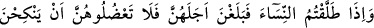
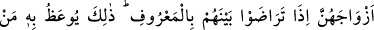
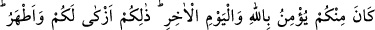
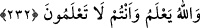

Eğer yaralarsan, bunun zararı sanadır.
Mânâlarını düşünmeden, işâretlerini anlamadan, esrârına vukûf ile hakîkatlerine tâbi
olmadan, envârıyla nûrlanıp hikmet ve mev’izalarıyla öğüt alma niyeti gibi bir niyet
bile taşımadan sâdece zâhirini, lâfızlarını tilâvetle “Allah’ın âyetlerini eğlenceye
almayınız.”
Öğüt, şâhin gibidir. Şâhin ölü üzerine değil, ancak diri üzerine konar. Kalbi ölen
kimse -bundan Allah’a sığınırız- öğütlerden etkilenmez. Rasûlullah (s.a.) buyurmuştur
ki: “İçinizde iki sarhoşluk, geçim sarhoşluğu ve cehâlet sarhoşluğu belirmedikçe siz
bu gün Rabbinizden bir beyyine yâni size, gideceğiniz yolu gösterecek bir beyân
üzeresiniz.”
Rivâyet olunduğuna göre Hasan Basrî, hacca giderken devesini kaybetmişti. Onu
ararken bir çocuğa rastgelip devenin nerede olduğunu sordu. O da “falan yerde idi” diye
cevap verdi. Târif edilen yerde deveyi bulduktan sonra çocuk Hasan Basrî’ye:
“Ey ihtiyar! Ne yer, ne giyersin?” dedi. Hasan Basrî:
“Şehvetimi kırmak için arpa ekmeği yer ve yün elbise giyerim.” diye cevap verdi.
Çocuk:
“Helâl olduktan sonra istediğini ye ve istediğini giy,” dedi ve devamla:
“Nerede yatıp kalkıyorsun?” diye sordu. Hasan:
“Sazlıkdan yapılmış bir kulübede,” dedi. Çocuk:
“Kendine zulmetme, istediğin yerde konakla,” dedi. Bunun üzerine Hasan Basrî:
“Eğer çocuk olmasaydın konuştuğun şeyleri dinler ve gereğince amel ederdim,” dedi.
Çocuk:
“Seni gâfil görüyorum. Sana dünyâdan haber verdim, kabûl ettin. Sana şimdi dinden
haber veriyorum istinkâf ediyorsun. Evine dön, bu hâlinle sana hac gerekmez.” dedi.
Sa’dî der ki:
Adam olana nasîhatı kulağında tutması yakışır.
Nasihat duvar üstünde yazılmış olsa da.
232. Kadınları boşadığınız ve onlar da bekleme müddetlerini bitirdikleri vakit,